Now we have reached the last post of this initial series. After implementing a full MNIST training pipeline end-to-end in both C++ and CUDA
and giving it a Python binding to be compiled into a Python module, we are ready for our last optimization, the C++ backend optimization.
Because we already walked over the source code this time we can dive right into the optimization work. In the following we will learn about
some CPU-native features, specifically looking at x86-64 (in the following only x64), among other optimization techniques. For everyone not familiar
with x86 I give a small optional primer that will be enough for you to follow this blogpost, given you are already familiar with assembly language in
general.
About the profiling tools, I personally run Linux, and the
profiling tools of choice here are Valgrind and perf. Since Valgrind requires us to set compile flags so that it can hook into the program we
need to recompile every time we want to analyze it with Valgrind, but still want to compare with the actual release version. perf is the simpler
tool for that, so this post will be using it throughout.
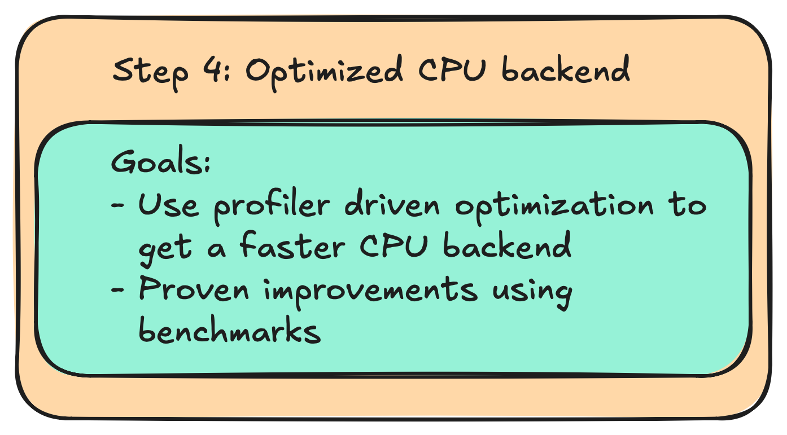
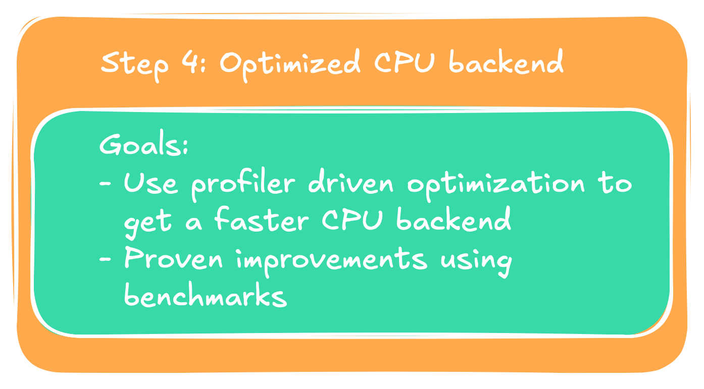
Optional: Primer on x86-64
This is a brief section intended to familiarize you with the basics of x64 assembly language, so that you can follow the discussions below.
If you already know it well you can skip this section. To start off, let us start with what x86 is. If you read the discussion above about
RISC-vs-CISC then you know that it is the architecture mostly run by Intel and AMD today. Unfortunately for us their commitment to backwards
compatibility means for us that we now have to deal with a lot of historical baggage accumulated over decades.
Intel notation vs. AT&T notation
We start off with the notation. Unfortunately there are two main ways to write x86 assembly code. The first is the AT&T notation.
This style of x86 is marked by a ton of %-symbols, which is mainly how you identify it. It writes instructions in order
instruction source, destination. Registers are prefixed with %, and immediates are prefixed with $. On top of that, it has
instructions suffixed with operand size. b stands for byte, w for word (16-bit), l for long (32-bit),
and q for quad (64-bit). For instance, an
addl $10, %eax adds the value of 10 in 32-bit value encoding onto whatever is stored in register eax (registers in more detail later).
On the contrary, the Intel notation writes instructions as in instruction destination, source, the reverse of what the
AT&T notation does. Immediates and registers have no prefixes. It does also not use the size suffixes given by AT&T. Instead, the operand sizes
are inferred by the register name used. Later we will see that backward compatibility also meant that the same registers have been reused by Intel and AMD,
making them larger and giving them naming conventions as to how we want to use them. So to sum this up, the same instruction above in Intel notation
would just be a simple add eax, 10.
There are additional differences in addressing modes, especially indirect addressing mode. But to make things simple we will choose one of the two
in the following, and we will look closer into addressing modes later. I personally like the Intel notation a little better, since I find it simpler
and more intuitive to read. Due to historical reasons however Linux tools often by default use AT&T notation, unless explicitly told to output Intel.
So the assembly code I got out of perf has all been in AT&T notation, so for the remainder of this blogpost we're gonna roll with AT&T notation.
Intel vs. AT&T assembly syntax at a glance.
AT&T
Intel
Operand order
source, destination
destination, source
Register prefix
%
—
Immediate prefix
$
—
Operand size
instruction suffix (b/w/l/q)
inferred from register name
Addressing mode
disp(base,index,scale)
[base+index*scale+disp]
Example
addl $10, %eax
add eax, 10
Registers
To understand registers and their naming we have to go back to the 8086, the processor to introduce the x86 architecture.
It came in 16-bit, which is why 16-bit are considered a "word" to this day. It had four general purpose registers, named
A, B, C, and D. You would suffix them either with an H or an L, indicating which byte you'd refer to. So AH would be the
higher byte of A, and AL then the lower byte of course. To access the full 16-bit of the registers you'd suffix it with an X,
as in AX, BX, and so on.
It further had all the classics, importantly the stack pointer SP, the base pointer BP, both also classified as general purpose,
the instruction pointer IP, the flags register Flags, and segment registers such as CS for the code segment, DS for the data
segment, and SS for the stack segment.
The first 32-bit x86 processor was the 80386 (easy to remember: "insert a 3 for 32-bit"). For backward compatibility Intel chose to extend the
previous registers, so that programs compiled for the 16-bit versions could still run. Thus the registers would remain the same, but if you
wanted to use the full 32-bit of the now larger registers you'd prefix with an E, as in EAX, EBX, and so on. There was also an ESP and an EBP
for the stack and base pointer respectively, among other extended registers. However, not each register got an upgrade to 32-bit. For instance
the CS and DS registers remained 16-bit.
AMD called in the 64-bit era with the AMD Opteron in 2003. This is the point where we start to refer to x86 as x86-64, or just x64 in short.
Apart from extending the previous general purpose registers (GPRs), now named RAX, RBX, RCX, and RDX to refer to their 64-bit versions, it gave x64
a whole slew of extra GPRs, named R8, R9, ..., R15. Other registers, among them the stack pointer and the base pointer, got an RSP and RBP upgrade, too.
This was important, as it allowed computers to overcome the 4GB RAM bottleneck, as with 32-bit we can index $2^32=4 \cdot 2^30 = 4GB$ of indexable memory.
The FLAGS register got an upgrade to both EFLAGS and RFLAGS as well.
General purpose registers (GPRs) across bit widths.
Register
64-bit
32-bit
16-bit
8-bit (high)
8-bit (low)
A
RAX
EAX
AX
AH
AL
B
RBX
EBX
BX
BH
BL
C
RCX
ECX
CX
CH
CL
D
RDX
EDX
DX
DH
DL
R8
R8
R8D
R8W
—
R8B
R9
R9
R9D
R9W
—
R9B
R10
R10
R10D
R10W
—
R10B
R11
R11
R11D
R11W
—
R11B
R12
R12
R12D
R12W
—
R12B
R13
R13
R13D
R13W
—
R13B
R14
R14
R14D
R14W
—
R14B
R15
R15
R15D
R15W
—
R15B
Other general purpose and special purpose registers.
Register
64-bit
32-bit
16-bit
Stack pointer
RSP
ESP
SP
Base pointer
RBP
EBP
BP
Instruction pointer
RIP
EIP
IP
Flags
RFLAGS
EFLAGS
FLAGS
Code segment
—
—
CS
Data segment
—
—
DS
Stack segment
—
—
SS
Apart from the general functions part of a processor x86 and x64 got extra features on top introducing extra registers as well. We don't need to know
all of them, for us the most interesting are the floating point registers. In my
previous post I have an optional section where I talk a little about
floating points. Without repeating myself, Intel introduced a floating point unit in the 80s with the Intel 8087. While perfectly suited for software back
then its stack based design does not serve modern standards anymore.
Later developments introduced another battlefront on processor design, namely SIMD instructions (see Flynn's taxonomy). Starting with MMX on Intel's side Intel and AMD competed on SSE and later AVX, introducing extra registers to load
floating point and integer operands. The first registers introduced by the wave of SSE versions are 128-bit wide registers called XMM0, XMM1, ..., XMM15.
With the introduction of AVX these were extended into 256-bit wide registers now called YMM0-YMM15, and would later be extended into 512-bit wide registers
consequently called ZMM0-ZMM15 with AVX-512. The newest generations of Intel CPUs however do not support AVX-512, since Intel moved toward a more
energy efficient CPU design. As far as I know however it is not off the table, just paused and planned to be re-introduced in future chips again.
SIMD register naming by width.
Naming
Bit-width
XMM0–XMM15
128-bit
YMM0–YMM15
256-bit
ZMM0–ZMM15
512-bit
We will later look at x64 assembly code, where we will see that those SIMD registers are being used for single floating points as well. This is due to them being
better to use for modern software than the floating point unit itself, which at this point exists solely for backward compatibility. We can therefore skip its register
naming.
Data transfer and addressing modes
Of course in a breakdown of the most important concepts of an ISA addressing modes cannot be left out. Before that we're gonna take a quick look at data transfer operations.
Of course the basic operation there is the mov-operation. Copying an operand from one register to another happens through this command. Since we are in AT&T syntax we get the
additional burden of writing out the width if it cannot be inferred. Remember that a word in x64 is 16-bit, hence movb is 8-bit, and movw is 16-bit. Going larger, movl is a
long move at 32-bit, movq is a quad move with 64-bit.
When inferable this can be omitted, as we will see very often. For instance, mov %ebx, %eax is a 32-bit wide move
operation from ebx into eax. Similarly, we can perform indirect addressing, copying the lowest 16-bit of whatever the stack pointer points to via
mov (%rsp), %ax. The 32-bit equivalent would look like this: mov (%rsp), %eax.
Apart from that, the mov-operation comes in a few extra flavors: movzx zero-extends our operand, and movsx does a sign-extend on it.
As for addressing modes, it is probably best to simply let them express through a table. Because I do find Intel notation much more legible than AT&T I left out the verbal
explanation, and simply have name, Intel notation, and then the AT&T notation we will be using. The table follows:
x86-64 addressing modes, Intel vs. AT&T syntax.
Addressing mode
Intel notation
AT&T notation
Register
mov eax, ebx
mov %ebx, %eax
Immediate
mov eax, 10
mov $10, %eax
Direct (absolute)
mov eax, [0x1000]
mov 0x1000, %eax
Indirect
mov eax, [rbx]
mov (%rbx), %eax
Base + displacement
mov eax, [rbx+8]
mov 8(%rbx), %eax
Base + index
mov eax, [rbx+rcx]
mov (%rbx,%rcx), %eax
Base + index*scale + displacement
mov eax, [rbx+rcx*4+8]
mov 8(%rbx,%rcx,4), %eax
RIP-relative (x64)
mov eax, [rip+0x10]
mov 0x10(%rip), %eax
SIMD instructions
With the introduction of SSE and later AVX a new class of instructions was introduced as well. The idea of the SIMD registers is to perform a single operation on multiple
operands the same time, hence increasing computational throughput. Operations on these registers either run on a single operand or on multiple operands at once.
The suffix indicates the type of the instruction: An ss for scalar single-precision, an sd for the double-precision equivalent, and the packed
versions of those named ps and pd, indicating that the instruction works on all loaded operands at the same time. A multiplication can hence have the following expression,
depending on what operands it works on: mulss, mulsd, mulps, and mulpd.
On top of that these two features introduced a large set of popular and rather complicated instructions that are commonly used in applications benefiting from SIMD instructions.
For instance, it has fused arithmetic operations like the multiply-and-add (MAD), but also more complex instructions like vector dot products, among others.
SIMD instruction suffixes: scalar vs. packed, single- vs. double-precision.
Single-precision
Double-precision
Scalar
ss
sd
Packed
ps
pd
We will later see in the disassembled programs that the compiler will map our code onto the single-operands instructions a lot, and we will fix it
using the packed versions instead.
Example: the mov instruction across scalar/packed and single/double precision.
Single-precision
Double-precision
Scalar
movss
movsd
Packed
movps
movpd
Optimization
In the following we are going to repeat the pattern we established in part 3.
That is, we are going to optimize the CPU backend step by step. Each step will be accompanied by a commit hash, times before and after,
a profiler output, and an explanation of what happens beneath the hood.
As for the benchmark, I am going to learn from my mistakes and
am going to run the benchmarks on the whole epoch from the start, rather than starting with a subset of it and switching later. That means that this time we are going to
have the same benchmark from beginning to the end. The benchmarking script will be the same as in the previous part as well,
except that this time we are not going to put our tensor onto the GPU.
As a short disclaimer beforehand: I did my best to walk into this whole process with a clean slate, so that each fix's contribution falls
solely onto the optimization steps I describe here. However, no larger piece of software is perfect, and I happened to stumble upon pieces
of code that either needed refactoring or debugging. These changes can contribute to the benchmarked times in both ways, upwards and downwards.
I am confident that the difference in time is mostly due to my optimizations, but if you want to dig deeper I have documented each step I take
in the git commit history, so that you can look at every change by yourself and test it out. And with that said let's get started with fix 1.
Opt. 1 - Use more aggressive compiler optimization
{% include pytorch-opt-summary.html
before="41.45s" after="35.48s"
speedup="1.20x" branch="main" commit="36fd56de172dd62d53f5bf6ce7a7f2d084a4d7d6" %}
Before we do any optimization, we first run a profiler. I used perf for this purpose, where we can get metrics such as time spent on the program,
giving us a call tree, and we can profile for individual metrics. We are going to use the tool extensively, and you will see various
examples of what it is capable of. For now we want to see where our computation time flows. perf gives us the following as to where it
spends most of the execution time:
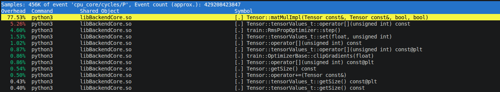
perf output before step 1, showing where the program spends most of its cycles on a function basis.
We can further use perf to look into the assembly code, where we get more details of what is happening. We find the following for the inner
loop of the matmul:
perf output before step 1, showing the instructions issued by the compiler.
The most telling sign for now is the ss-suffix, indicating single operand instructions. My machine is an Asus laptop with an Intel i5 210Hx12,
and running cat /proc/cpuinfo | grep flags | head -1 | tr ' ' '\n' | grep -i avx in bash reveals that it is AVX and AVX2 capable.
Hence the compiler should auto-vectorize the loop using SIMD instructions, but somehow it did not do that.
Since so far we did not specify an optimization flag, it is the
most natural solution to first try to use a more aggressive optimization. If you want to follow this step, simply add the line
set(CMAKE_CXX_FLAGS_RELEASE "-O3 -DNDEBUG") in CMake. The program executes as expected, so the optimization did not
introduce errors so far. The improvement on the other side is an easy win, but not that strong. As we will see in the next section the
compiler still has not figured out how to optimize the inner loop yet, so the optimizations happened somewhere in less impactful parts of
the program.
Opt. 2 - Test better access pattern and inline functions
{% include pytorch-opt-summary.html
before="35.48s" after="28.10s"
speedup="1.26x" branch="main" commit="ec17463cf7e568efe7d99a0be64a4d5e52d08efe" %}
In this section we will lay our hands on the matmul operation. Looking at the perf output for now we can
see that again the matmul eats almost all of our cake:
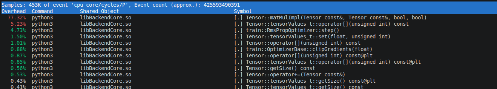
perf output before step 2. The matrix multiplication is the one we want to chew down.
Because we will be talking about the matmul quite a bit in this post it is probably a good idea to first take
a look at it. We will start with the version below and gradually refine over the next few subsections that are part of this
blog entry. So here it is:
// src/backend/data_modeling/tensor.h
template<bool transposeLeft, bool transposeRight>
void Tensor::matMul2DCpu(Tensor& res, const Tensor& left, const Tensor& right, const tensorSize_t resOffset,
const tensorSize_t leftOffset, const tensorSize_t rightOffset) {
const auto nRowsLeft = static_cast<tensorSize_t>(left.dims.get(-2));
const auto nColsLeft = static_cast<tensorSize_t>(left.dims.get(-1));
const auto nColsRight = static_cast<tensorSize_t>(right.dims.get(-1));
const auto nRowsRight = static_cast<tensorSize_t>(right.dims.get(-2));
const tensorSize_t M = transposeLeft ? nColsLeft : nRowsLeft;
const tensorSize_t K = transposeLeft ? nRowsLeft : nColsLeft;
const tensorSize_t N = transposeRight ? nRowsRight : nColsRight;
for (tensorSize_t i = 0; i < M; i++) {
for (tensorSize_t j = 0; j < N; j++) {
ftype sum = 0;
for (tensorSize_t k = 0; k < K; k++) {
tensorSize_t leftIdx = transposeLeft ? leftOffset + k * nColsLeft + i
: leftOffset + i * nColsLeft + k;
tensorSize_t rightIdx = transposeRight ? rightOffset + j * nColsRight + k
: rightOffset + k * nColsRight + j;
sum += left.values->data()[leftIdx] * right.values->data()[rightIdx];
}
res.values->data()[resOffset + i * N + j] = sum;
}
}
}
I note here that I have already silently introduced an optimization that happened on the CUDA side,
namely the template overloads. Other than that the kernel should be obvious, since this is the looping and
index arithmetics we already have seen before. In short, it is a plain naive matrix multiplication.
So let us look at the perf output. We start profiling the number of cycles spent per instruction:
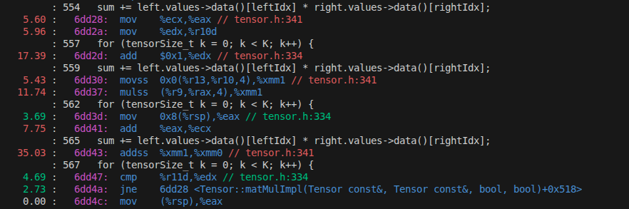
perf output showing the number of cycles spent per instruction.
This is rather telling. We can see that the compiler performed instruction scheduling optimizations
for us. We can see at the top that it is first loading the two operands of the matmul into the registers.
To hide the latency from the memory fetches it goes back to the outer loop and increments the loop's counter
by one, since it already resides in a register.
Going through it step by step it does the following: The first two instructions annotated by the sum set up our indices,
indicated by where the two destination registers are actually used. The increment of k by one is obvious.
Next, it moves one of the two operands into register xmm1 and multiplies the two through a mulss-operation.
Next it updates eax by what's coming next on the stack-pointer, and adds that onto ecx. Those two are likely
an index update of the leftIdx or rightIdx for the next round.
Lastly, it adds the result onto the running sum.
When it comes to the annotation, what pops out is the weird numbers. The addss takes a lot of time, and so does
the mulss, but the mov-operations are expensive too, though not as much. This is likely contributed to skid, where the
latency of instructions goes a few instructions further down the line. We can confirm this by tracking better metrics,
going down the PEBS rabbit hole of Intel CPUs. But since we already know that we do not run cache-optimal we can also
confirm that by specifically sampling for cache-misses. We get the following:
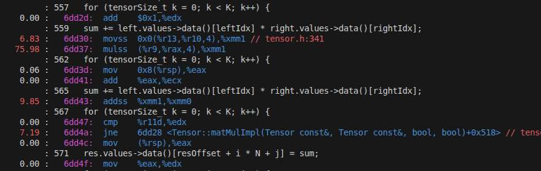
perf output showing the cache misses per instruction.
Test better access pattern
This confirms what we suspected, namely that we do have a large number of cache misses in these lines.
To fix that we are going to add the tiled approach later. However, before we start we could score a quick win that we will undo, but
sometimes our curiosity gets the better of us. So I decided to write out the loops specifically, but with a better memory access pattern.
I therefore created this little beast here:
// src/backend/data_modeling/tensor.h
template<bool transposeLeft, bool transposeRight>
void Tensor::matMul2DCpuScalar(Tensor& res, const Tensor& left, const Tensor& right, const tensorSize_t resOffset,
const tensorSize_t leftOffset, const tensorSize_t rightOffset) {
// physical, not logically as in the transposition
const auto nRowsLeft = static_cast<tensorSize_t>(left.dims.get(-2));
const auto nColsLeft = static_cast<tensorSize_t>(left.dims.get(-1));
const auto nColsRight = static_cast<tensorSize_t>(right.dims.get(-1));
const auto nRowsRight = static_cast<tensorSize_t>(right.dims.get(-2));
if constexpr (!transposeLeft && !transposeRight) {
for (tensorSize_t i = 0; i < nRowsLeft; i++) {
const tensorSize_t leftOffset = i * nColsLeft;
const tensorSize_t resOffset = i * nColsRight;
{
// tensors not zero initialized, therefore need one dry run pre-filling
const auto leftVal = left.values->data()[leftOffset];
for(tensorSize_t j = 0; j < nColsRight; j++) {
res.values->data()[resOffset + j] = leftVal * right.values->data()[j];
}
}
// compute the entire column of the left matrix
for (tensorSize_t k = 1; k < nRowsRight; k++) {
const tensorSize_t rightOffset = k * nColsRight;
const ftype leftVal = left.values->data()[leftOffset + k];
for(tensorSize_t j = 0; j < nColsRight; j++) {
res.values->data()[resOffset + j] += leftVal * right.values->data()[rightOffset + j];
}
}
}
}
// do the other overloads here also
}
The idea is really simple: If none of the two matrices is transposed, use a better access pattern on the right matrix. For
the transposed cases do the same by explicitly writing out the loops. No fancy techniques, just a minor fix. The code for this
fix resides in commit hash bc4878e119c377cf57c44eb5008200396811a12c.
In theory the fix should speed things up by increasing cache-hit rates. Testing it out
on our benchmark gives us however a terrible number, namely around 118s on our benchmark. This fix does not really matter, since
we eventually will swap to the tiled matmul approach anyway, but it is still worth looking into what happened.
Inline getter- and setter-functions
Running perf stat on the benchmark on the matmul specifically, that I introduced in the previous post in an optional section,
shows us this:
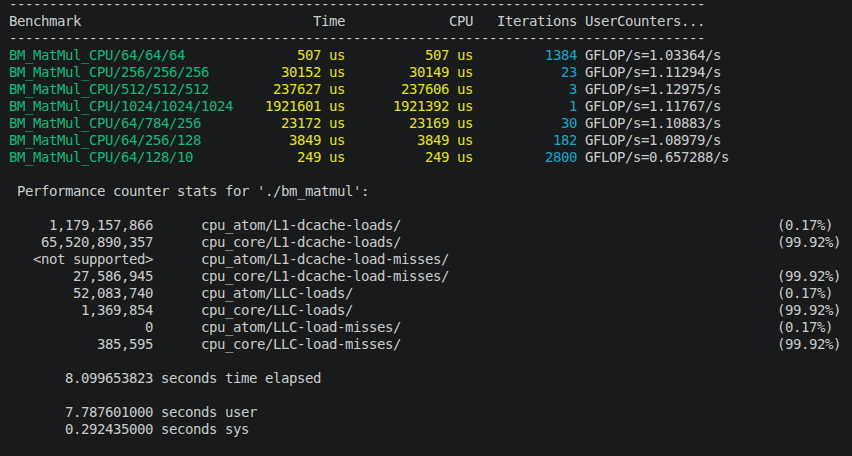
perf stat output on the matmul benchmark. We see that cache misses are overall low on the benchmark (only non-transposed case).
The surprising part about this is that even though L1-cache misses are low at around 0.04% roughly,
the program did really badly. So something else must be going on. We take a look at the assembly code and
find this:
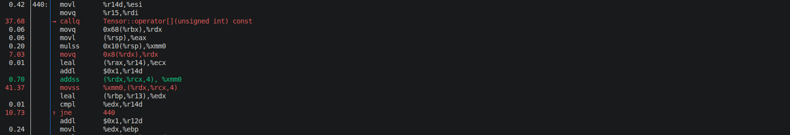
perf output on the matmul benchmark on a release build. We find function calls we would rather have inlined.
The interesting part is the second line from above, showing us that the indexing operator on the tensor could not be inlined.
Hence, the fix here is to inline the getter- and setter-method for the tensor. You can find the initial fix in commit hash
ec17463cf7e568efe7d99a0be64a4d5e52d08efe. In this commit I moved the getter- and setters out of the .cpp-file into
the header, giving the compiler the chance to inline those functions where it deems it a good choice. And the results speak
for themselves, with a resulting benchmark time of around 27.5s.
Second wave: Blanket inline on small and trivial functions
I did go a little beyond what was needed and did more of a blanket inline in commit ec17463cf7e568efe7d99a0be64a4d5e52d08efe,
where I identified small functions and moved their implementation
directly into the header. This gives the compiler the chance to embed them directly into where they are called. Running the code again
with the functions inlined we get the following: 28.7427s.
Now this is a little odd, given that runtime increased a little, roughly one second on the whole script. Re-running both versions reveals to
me that this does not seem to be a one-off, but rather a consistent degradation. Running perf stat on both versions we see the
following:
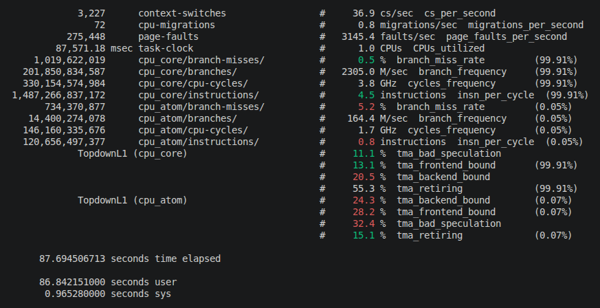
perf stat output before the blanket inline.
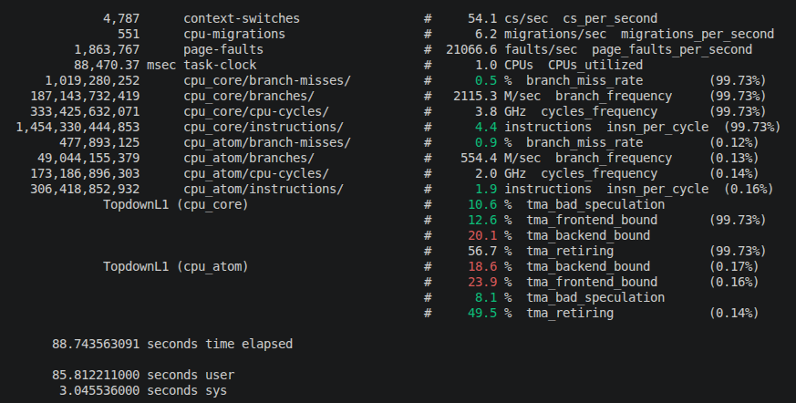
perf stat output after the blanket inline.
A little unexpected, after the larger inline we did the program genuinely spends less time in user space,
but has increased time in system space, with more context switches and more CPU migrations. Work on P-cores
(cpu_core) has decreased, and work on E-cores (cpu_atom) has increased. We also see more
page faults. Checking the file sizes reveals the bigger picture as seen below:
Binary sizes before and after the blanket inline.
File
Before inlining other methods
After inlining other methods
_core.so
3.8M
4.8M
_nn.so
3.5M
3.8M
_sys.so
256K
256K
_train.so
2.3M
2.5M
libBackendCore.so
13M
17M
This is a classic case of inlining too aggressively in the end. Our inlining has increased code size dramatically, leading to
more page faults due to more code needing to be moved into working memory. This interrupts the kernel and the scheduler, giving
the scheduler opportunity to shift the workload in between cores, and hence also the opportunity to shift it onto E-cores.
Because the difference is small we can leave it as it is now, I might revert those changes back to their state before the second, more
blanket inline, and doing inlining more punctual in the future. For now we roll on with it.
Opt. 3 - Implement tiled matmul
{% include pytorch-opt-summary.html
before="28.10s" after="8.44s"
speedup="3.33x" branch="main" commit="2fa0fbadbcd2b6f6bbc90a35a832f855d403bd3f" %}
This one unsurprisingly slaps big time, since we already saw the largest improvements from the CUDA side on this one.
I also note that for brevity I cut this blogpost a bit short, since I mainly repeat myself here if you have seen the previous post.
Before we start we just verify what we already have learned there though we will run perf on the benchmark. In the following we see
the contribution of matmul and it's assembly, annotated with cycles:
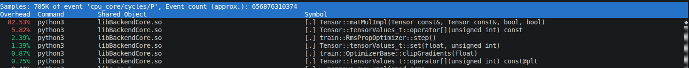
perf output on cycles. Matmul clearly stands out as the main contributor to runtime.
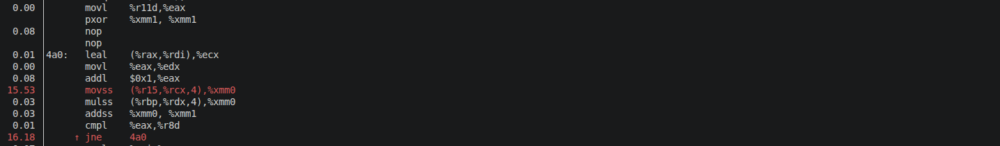
perf output for disassembled inner matmul loop. We still see many cycles spent in arithmetic operations, same reasoning as earlier.
We can see that matmul is still the main contributor to run-time, and we can still see the same pattern as before. The arithmetic operations
get the bulk of cycles, which is likely the wait on operand loads. We can get a hint on this in the last perf outputs of the previous section,
where we spend little time on tma_retiring, but lots on tma_frontend and tma_backend. The tma_backend number is what we aim to reduce here.
I admit that here additional measurements would be better for a more concise diagnostic, but my fingers burned for the tiled matmul, which would
be subject to another analysis cycle anyway, so let's start with it.
Because this time I want to spare you (and me) the indexing hell introduced in CUDA I introduce an extra struct
here, representing the tile we load in. Its definition looks like this.
The tile is pretty much self-explanatory. I templated the struct so that we can exchange the datatype easily, but also in case we have
need for it somewhere else. I also introduced three template parameters indicating the dimensions of the tiles for both the left and
the right tile, albeit for now I only support quadratic tiles, so this part of the code is a hot candidate for some small refactoring.
The tiles are stored as std::array types, reducing run-time through better data locality compared with the std::vector data-type. Because we will
always need a left tile, a right tile, and a result tile to write the results into we can write out the three arrays. The clearResult zeros out
the result tile, and the addResult adds the content of the result tile into a target tensor into the given dimensions. The load-methods are also
very self-explanatory. With that we can take a look at what our refactored matrix multiplication looks like now:
// src/backend/data_modeling/tensor.h
void Tensor::matMul2DCpuScalar(Tensor& res, const Tensor& left, const Tensor& right, const tensorSize_t resOffset,
const tensorSize_t leftOffset, const tensorSize_t rightOffset) {
// physical, not logically as in the transposition
const auto nRowsLeft = static_cast<tensorSize_t>(left.dims.get(-2));
const auto nColsLeft = static_cast<tensorSize_t>(left.dims.get(-1));
const auto nColsRight = static_cast<tensorSize_t>(right.dims.get(-1));
const auto nRowsRight = static_cast<tensorSize_t>(right.dims.get(-2));
// tune in accordance with cache-line size
constexpr tensorSize_t TILESIZE = (MemoryLayout::CACHE_LINE_BYTES / sizeof(ftype)) * 4;
using tile_t = matmul::MatmulTile<ftype, TILESIZE, TILESIZE, TILESIZE>;
tile_t tiles;
res.reset(0.0f);
auto matmulTiles = [TILESIZE] (tile_t& tiles) {
for(tensorSize_t n = 0; n < TILESIZE; n++) { // rows left
const tensorSize_t leftTileRowOffset = n * TILESIZE;
for(tensorSize_t m = 0; m < TILESIZE; m++) { // cols left
const tensorSize_t rightTileRowOffset = m * TILESIZE;
const ftype leftVal = tiles.left[leftTileRowOffset + m];
for(tensorSize_t kk = 0; kk < TILESIZE; kk++) {
tiles.result[leftTileRowOffset + kk] += leftVal * tiles.right[rightTileRowOffset + kk];
}
}
}
};
if constexpr (!transposeLeft && !transposeRight) {
for(tensorSize_t i = 0; i < nRowsLeft; i += TILESIZE) {
for(tensorSize_t j = 0; j < nColsRight; j += TILESIZE) {
tiles.clearResult();
for(tensorSize_t k0 = 0; k0 < nColsLeft; k0 += TILESIZE) {
tiles.loadLeft(left.values->data(), i, k0, nRowsLeft, nColsLeft);
tiles.loadRight(right.values->data(), k0, j, nRowsRight, nColsRight);
matmulTiles(tiles);
}
tiles.addResult(res.values->data() + resOffset, i, j, nRowsLeft, nColsRight);
}
}
}
else if constexpr (!transposeLeft && transposeRight) {
// ...
}
// add the other template overloads
}
At first we initialize a tile. We tune it in accordance with a cache-line, which I encoded through CACHE_LINE_BYTES, which is
a constexpr-number of 64 on my machine. To avoid repetitive work I wrapped the matrix multiplication in a lambda, since it is the
same for all four cases, multiplying the two tiles into the resulting tile. Lastly we add it on top of the resulting matrix.
The result is very obvious, with the best improvement we logged so far in this post. However, we are not done with it. Looking at the
aftereffects of our implementation, given by the two perf outputs below, we do see that the compiler still did not do us the favor of
autovectorizing the loops. The following fix will get us to do this manually.
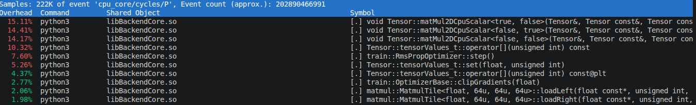
perf output on cycles. Matmul has been reduced in CPU cycles.
Opt. 4 - Manually vectorize the matmul through AVX
{% include pytorch-opt-summary.html
before="8.44s" after="6.13s"
speedup="1.38x" branch="dev/cpu_optimization_fixed" commit="7b176657f6c071a2097792991973020200583829" %}
As indicated in the previous step the compiler once again did not help us in auto-vectorizing the loop. The following output shows us
the single operand usage the compiler emits, and that we plan to fix in the following.
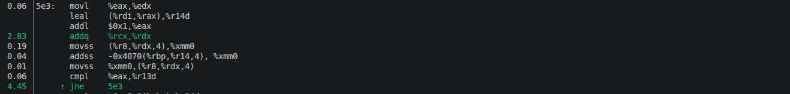
perf output for disassembled inner matmul loop. The operations are still single operand operations.
On x64 chips we can use AVX to do so. Chances are you use such a machine, with a small chance of it being a Mac, which
has its own proprietary hardware acceleration instructions. In the following I show the AVX variant.
Optional: Quick primer on AVX
Basics and instruction format
I assume you are familiar with AVX at this point, or at least the rough outline. Here I will only briefly describe what we need to
look out for if we want to use it in our code. As described in the optional section above, AVX
introduced a set of new registers, starting with XMM0-XMM15, and extending that to the Y- and Z-variants. With that came a set of
instructions, with the ss-suffix for single operands, and the ps-suffix for the packed operands.
What I still owe you is what this looks like in C++. To start off, we have to include the header immintrin.h. This one
gives us access to the AVX functions. To make AVX accessible in our code we also have to tell the compiler that we want to use AVX.
What the flag looks like is compiler dependent. In the case of GCC it is for instance -mavx2 for AVX2.
Once this is done we get access to the AVX functions defined in the header we just included. Instructions are usually of the form
_mm[bitwidth]_[instruction]. For instance, in AVX and AVX2 we use the YMMX registers, which are 256-bit wide. Data types follow this
convention with _m[bitwidth]. A load into a YMMX register would be for instance _m256 var = _mm256_load_ps(somePtr);.
The AVX library already serves the overloads on the arguments. For instance, if the pointer is of floating point type we have
The last thing worth noting is memory alignment. AVX is implemented to fetch all memory in parallel. So say we load a 256-bit wide operand.
Then there are two cases now:
Operand is aligned
Operand is not aligned
In general AVX provides two memory loads for that: Aligned (default) and unaligned (e.g. _mm256_loadu_ps. Pay attention to the u after load).
The unaligned version should always work, but can be slower in reality. I have heard that nowadays on modern CPUs the penalty between aligned
and unaligned is non-existent anymore, but I cannot vouch for that. However, I do know that whenever possible it is better to align memory.
The graphic below shows the general idea.
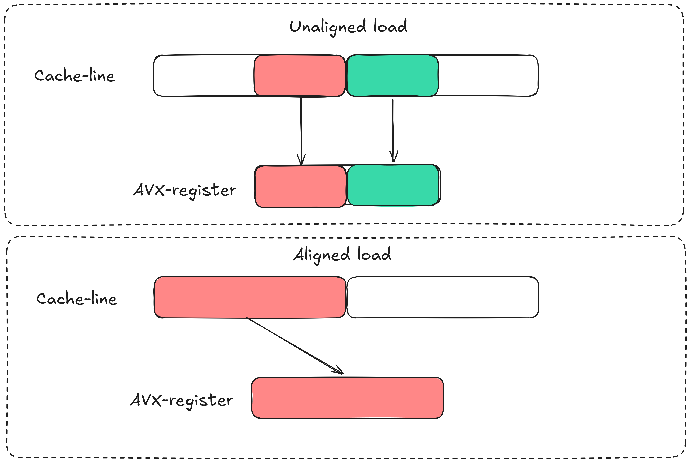
Contrasting aligned and unaligned loads and stores into AVX registers.
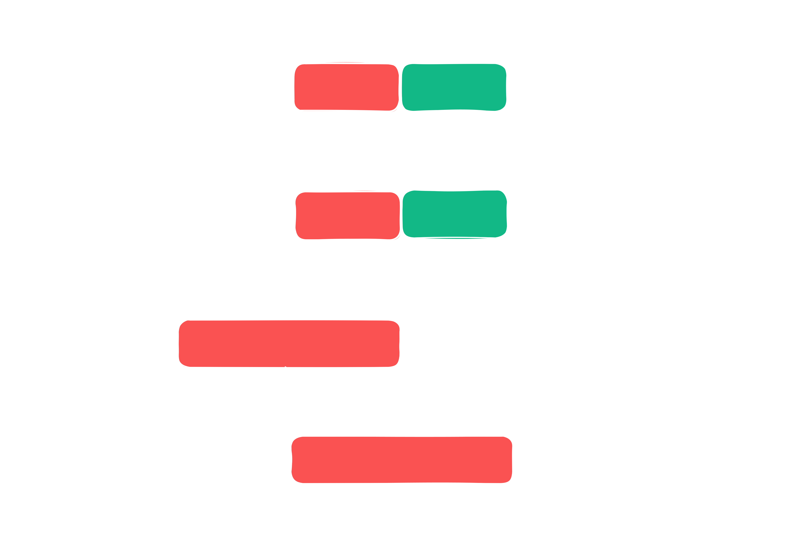
Contrasting aligned and unaligned loads and stores into AVX registers.
What we can see is that when memory is unaligned, which is latest a physical demand when we load from cache lines, then
AVX is forced to perform two loads over one. However, with aligned memory we can simply load the operand all at once.
The alignment differs between AVX versions. While AVX and AVX2 requires a 32-byte alignment, AVX512 requires a 64-byte alignment.
For reference, if you happen to use SSE instructions (unlikely, but possible), you'll want to align by 16-byte.
To start off, we first have to align our operands. We can do this through a slight modification in our tile-data structure.
The quantity CPU_TENSOR_ALIGNMENT is defined by the following: constexpr static unsigned int CPU_TENSOR_ALIGNMENT = 64;.
Here I picked 64-bytes to enable AVX512, but 32 for AVX2 will suffice for us. To assist the fetches into cache memory we also modify
our memory pool slightly by using aligned allocs rather than the casual malloc calls:
// src/backend/shared/memory_pool.h
namespace mempool_impl {
// ...
template<typename T>
T* MemoryPool<T>::request(const Device d, const tensorSize_t n) {
switch(d) {
case Device::CPU:
{
auto& list = freeLists[n];
if(!list.empty()) {
T* ptr = list.back();
list.pop_back();
assert(ptr != nullptr);
ASSERT_HOST_PTR(ptr);
return ptr;
}
// aligned_alloc requires size to be an integral multiple of alignment
const tensorSize_t alignedByteSize =
((n * sizeof(T) + MemoryLayout::CPU_TENSOR_ALIGNMENT - 1) / MemoryLayout::CPU_TENSOR_ALIGNMENT)
* MemoryLayout::CPU_TENSOR_ALIGNMENT;
T* ptr = std::is_same_v<T, ftype> ?
static_cast<T*>(std::aligned_alloc(MemoryLayout::CPU_TENSOR_ALIGNMENT, alignedByteSize)) :
static_cast<T*>(std::malloc(n * sizeof(T)));
// same as before...
}
}
}
}
We can then replace our matmul implementation by the AVX version. We enclosed the matmul in a lambda earlier, so all
we have to do is to rewrite the matmul itself. Using AVX instructions it looks like this now:
// src/backend/data_modeling/tensor.h
auto matmulTiles = [TILESIZE] (tile_t& tiles) {
for(tensorSize_t n = 0; n < TILESIZE; n++) { // rows left
const tensorSize_t leftTileRowOffset = n * TILESIZE;
for(tensorSize_t m = 0; m < TILESIZE; m++) { // cols left
const tensorSize_t rightTileRowOffset = m * TILESIZE;
const ftype leftVal = tiles.left[leftTileRowOffset + m];
const __m256 leftValVec = _mm256_set1_ps(leftVal); // broadcasted load
for(tensorSize_t kk = 0; kk < TILESIZE; kk += 8) {
__m256 rightVec = _mm256_load_ps(&tiles.right[rightTileRowOffset + kk]);
__m256 resultVec = _mm256_load_ps(&tiles.result[leftTileRowOffset + kk]);
#if defined(USE_AVX2)
resultVec = _mm256_fmadd_ps(leftValVec, rightVec, resultVec);
#elif defined(USE_AVX)
// AVX does not have fmadd
__m256 mulVec = _mm256_mul_ps(leftValVec, rightVec);
resultVec = _mm256_add_ps(resultVec, mulVec);
#endif
_mm256_store_ps(&tiles.result[leftTileRowOffset + kk], resultVec);
}
}
}
};
One last thing to add is that there is hearsay that sometimes the compiler detects AVX on the system and happily compiles, but
incompatibilities can crash the program at run-time. We can guard against this using a run-time check looking like this:
// src/backend/utility/avx_info.cpp
void utility::AvxInfo::verifyAvxSupport() {
#if defined(USE_AVX512)
if (!__builtin_cpu_supports("avx512f")) [[unlikely]] {
std::cerr <<
"Binary compiled with USE_AVX512 but the CPU does not support AVX-512. " <<
"To use AVX reconfigure with -DAVX_VERSION=AVX2 (or AVX or SCALAR) and rebuild." << std::endl;
}
else [[likely]] {
avxAvailable = true;
}
// check for other AVX versions...
#endif
}
We can then guard against run-time exceptions using a static variable around our matmul-call like this:
Checking the assembly code after the fix we do find that now indeed the backend uses the AVX instructions.
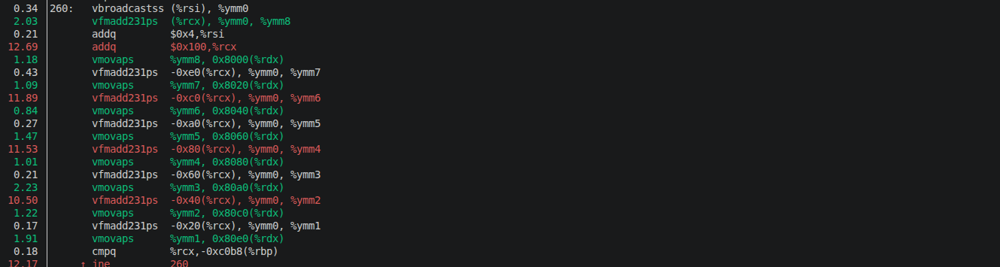
perf annotated output after step 4. We can see that it now uses the packed instructions in the inner matmul loop.
And that concludes our AVX implementation. In my library I check at compile time what AVX versions are available and compile with the
highest available version. if desired the version can be set manually by calling cmake -DAVX_VERSION=AVX2 ... Other options
are AVX, AVX512, and SCALAR for the non-AVX version.
For those who are interested in the compiled parts of this and who might want to try out a few compilers or flags, I used Godbolt
to play around with this. You can follow the link https://godbolt.org/z/Eesbh6Y1r
to get the source code and the initial compiled versions that I get in my current toolchain. Have fun!
Opt. 5 - Bypass PLT for library internal calls
{% include pytorch-opt-summary.html
before="6.13s" after="5.84s"
speedup="1.05x" branch="dev/cpu_optimization_fixed" commit="8256457a020721aa9314497d7e74252fdb3d60a3" %}
We are now in a domain where our optimization efforts yield diminishing returns, in accordance with Amdahl's law. However, we are not
done with optimizing our backend yet. Once again running perf we do see the following:
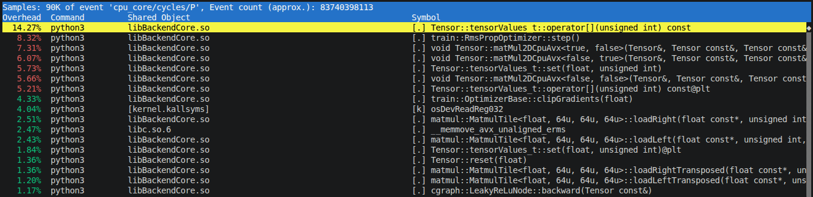
perf output before fix 5.
We do see that we reduced the matmul a whole lot from the overall picture. It seems that the []-operator at the top is the main slug now,
but if you add the three instantiated template overloads of the matmul together it's still the top operation, with a run-time fraction of
more than 20%. We take a brief look if we get some hints on whether we can do better to yield this output:
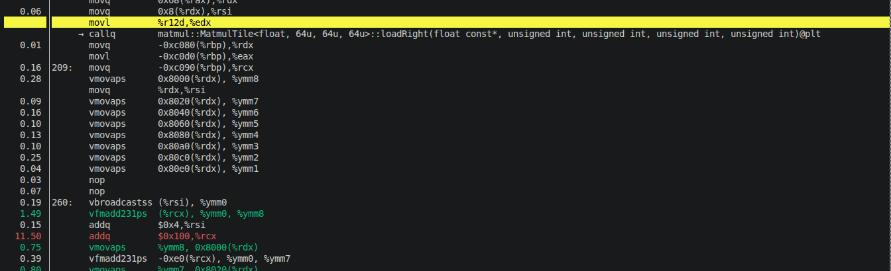
perf annotated matmul output before fix 5.
The interesting one here is the call through the Procedure-Linkage-Table, which is indicated by the @plt at the end of the line after the
highlighted one in the screenshot above (I personally find white letters on a black background easier to read than black letters on a yellow
background). This points us to a general problem with how we compile, and this fix is not constrained to the matmul itself, but rather to the whole
backend.
Understanding this fix requires knowledge of the Global-Offset-Table (GOT) and the Procedure-Linkage-Table. For those who want to follow
this entry and do not know what these are about I have an optional section next. Anyone who knows them or who does not care about the details in this
section is free to skip past the optional section.
Optional: Global-Offset-Table (GOT) and Procedure-Linkage-Table (PLT)
This is a quick breakdown of the two hidden yet extremely important data structures we are dealing with in this subchapter.
In part 1 of this blogpost series we gave our library position independent
code. In a very brief optional section toward the end I promised you that we would be revisiting that part of the library in a later
post, and that fateful moment has finally arrived.
In essence, back then we concluded that we have to use dynamic linking into our library from Python, since the main process surrounding
everything is the Python interpreter itself. That means that at startup time of the program calls into our library do not have an address
yet, as opposed to statically linked programs. The following figure shows briefly what that looks like in the latter case:
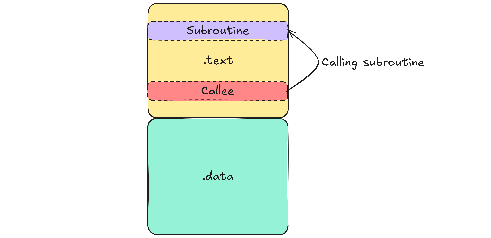
Call in static linking exemplified. The callee calls directly into the relevant function, implying one indirection.
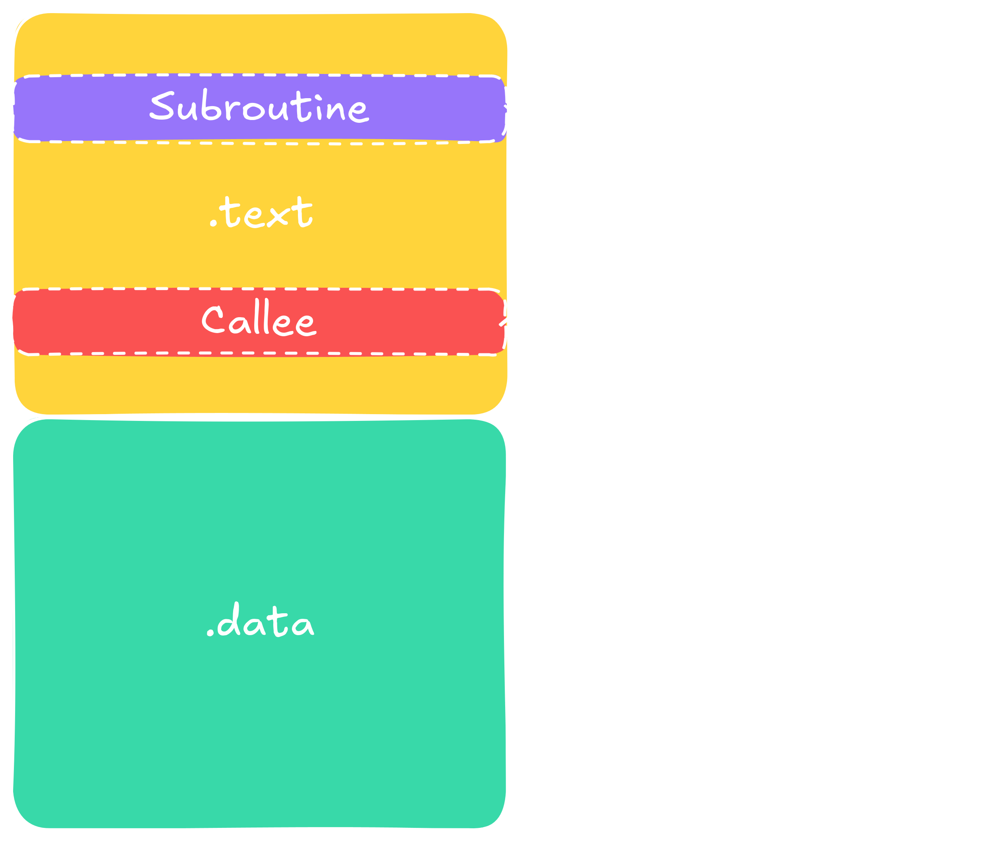
Call in static linking exemplified. The callee calls directly into the relevant function, implying one indirection.
The figure shows that a function call is a simple call at the relevant address. Additionally, this address is known at compile time,
thus can be directly baked into the assembly code as an immediate. So no surprises here.
It gets more interesting when we use dynamic linking. In that case the program shares an address space with the binary we just linked
in (the library), but the addresses are not known at run-time. The question now is how does this work, and the answer is rather
mundane, yet worth knowing in jargon. The following image shows the principle, and then I walk you through step-by-step.
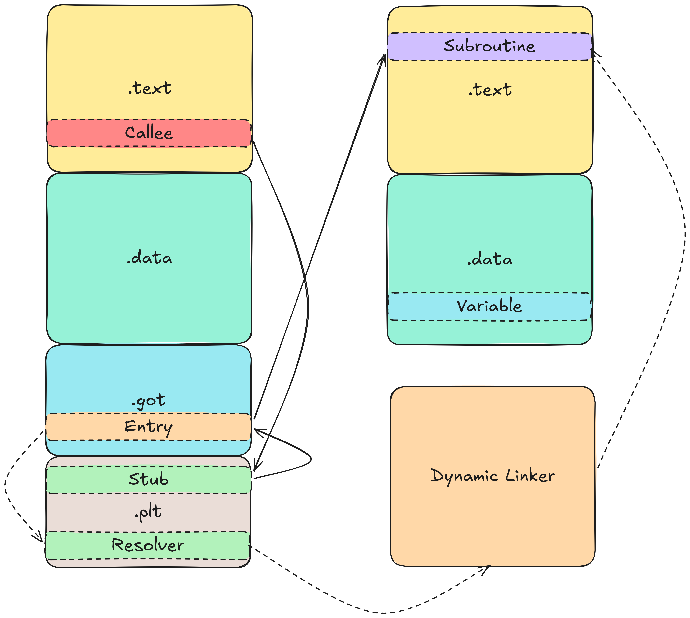
Call in dynamic linking exemplified. The first time the call follows the dashed line, and every subsequent call
is routed through the solid line.
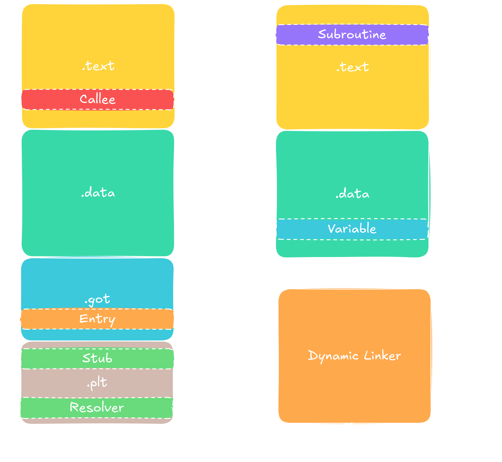
Call in dynamic linking exemplified. The first time the call follows the dashed line, and every subsequent call
is routed through the solid line.
Here, I introduced two new segments in the program. First there is the GOT, which is part of the .data segment, i.e.
it can be written to. The second segment is the read-only PLT segment. It holds a stub pointing to the entry in the GOT.
The first time a function is called, the GOT holds a reference to an address resolver. That resolver then calls the dynamic
linker, returning back the address of the function in the loaded library, which then gets cached in the GOT.
The whole mechanism results in a chain of indirections the first time the function is called. But then every subsequent call
gets resolved by three indirections: First into the PLT, then into the GOT, pointing to the function itself. The main idea behind
this is lazy binding. We only load memory addresses of calls that we need. We could theoretically bypass the PLT, calling into the
GOT directly, but that would mean we could not distinguish the first call from the follow up calls, forcing us to fill the GOT at
program start-up, which can be very costly and inducing overhead on functions we actually do not use on first call.
It is also interesting to know that the route through the PLT is actually not possible with objects and variables. The reason is that
functions are executable. When we call the function, we can first call another function that replaces the address for us as a side effect.
Objects do not have such a mechanism inherently. So for global objects and variables the addresses are filled into the GOT at load time,
and a call to those will always be one indirection into the GOT and then a second one into the library, resulting in two indirections.
The problem with using the PLT in our code is that it calls the PLT to walk through the backend itself. It is in matmul, where a local tile
object resides, and utilizes the PLT to call into an object that should technically reside in the same translation unit. But how is that
possible?
The reason is in the default behavior of the compiler. When we compile a dynamic library, the compiler does not know which methods we want
accessible from the outside, and which ones we don't. That in turn makes the compiler generate a GOT and PLT for all publicly interfaceable
functions. Our fix then is of course to revert the compiler's choices. We tell the compiler to generate invisible functions by
target_compile_options(BackendCore PRIVATE -fvisibility=hidden -fvisibility-inlines-hidden). We can then on a per class or
function level decide to expose them by __attribute__((visibility("default"))) in GCC and clang.
In my case I just did a blanket per-class exposure on classes that are partially or fully exposed on the Python side, and one can do a fine
tuning for classes that only need partial exposure on the Python side. Crucially Python does not need to know about the tiles, hence we do not
expose that one, concluding our fix.
Opt. 6 - Remove safety checks from often called functions
{% include pytorch-opt-summary.html
before="5.84s" after="5.53s"
speedup="1.06x" branch="dev/cpu_optimization_fixed" commit="c8529031d984aa9aef970bd9b02151682e878423" %}
This fix is gonna be a very brief and quick one. As we saw in our previous step, accessing the tensor's values now chews up a lot of our
cycles. For reference the output here again:
perf output before fix 5.
Now the crux is that I decided to make these functions safe by using boundary checks as in
// src/backend/data_modeling/tensor.cpp
ftype Tensor::tensorValues_t::operator[](const tensorSize_t idx) const {
if(idx >= size)
throw std::out_of_range("Out of range for tensor");
// ...
}
Once a network has proven itself there is however no reason for those boundary checks, and given a well-defined network they
will not occur in any case. Instead those are more for debugging purposes for us as the backend devs. Hence we can simply
guard those checks by
// src/backend/data_modeling/tensor.cpp
ftype Tensor::tensorValues_t::operator[](const tensorSize_t idx) const {
#ifndef NDEBUG
if(idx >= size)
throw std::out_of_range("Out of range for tensor");
#endif
// ...
}
And that's the fix already. I have to admit here though that this was my bad. If you go into the code yourself you'll find that I
flipped the condition around with #ifdef NDEBUG. A small letter making a huge difference. The new output looks like this
now:
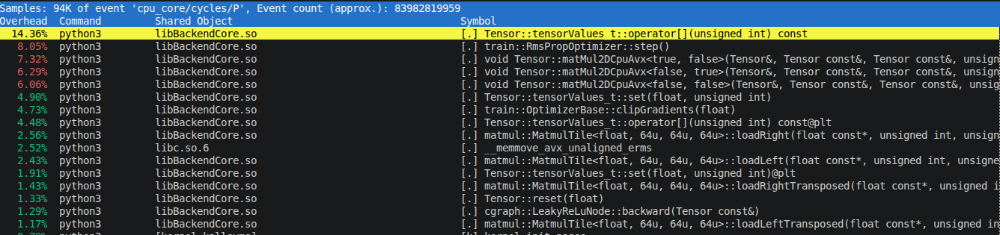
perf output after fix 6.
To be fair, it didn't seem to tilt the needle in the perf profiling, but we get some improvements in our benchmark that we happily take.
Opt. 7 - Remove redundant device checks
{% include pytorch-opt-summary.html
before="5.53s" after="3.41s"
speedup="1.62x" branch="dev/cpu_optimization_fixed" commit="b53efbdce06f51868d8650b772895ff61cb498cc" %}
Looking at the output after the last fix we can still see that the getter- and setter-methods to access our tensors are taking a long time.
So let's have a look at an example now of what they look like:
// src/backend/data_modeling/tensor.cpp
ftype Tensor::tensorValues_t::operator[](const tensorSize_t idx) const {
#ifndef NDEBUG
if(idx >= size)
throw std::out_of_range("Out of range for tensor");
#endif
switch(device){
case Device::CPU:
return values[idx];
case Device::CUDA:
#ifdef __CUDA
{
ftype res;
cudaErrchk(cudaMemcpy(&res, values + idx, sizeof(ftype), cudaMemcpyDeviceToHost));
return res;
}
#else
__throw_invalid_argument("Not compiled with CUDA");
break;
#endif
}
__throw_runtime_error("Should never reach here.");
return 0; // suppress warnings
}
Now that's a whole lot for simply reading a value. It becomes more absurd when we think about how we structured our
CUDA side in the code: We request an operation, say a matmul, then check where the tensors reside, then perform the operations.
On the CUDA side that works just fine, since we operate on raw tensors.
However, on the CPU side we use this function for every value we read. That's a whole lot of redundant device checks we perform here.
In the following we bypass these redundant checks. We leave the operator for the Python binding, where a user might want to use single
values or print out some information about the tensor. And as for the backend side, we give the functions on the CPU side a pointer to
the raw array, mimicking the CUDA side. For instance, we transform this part
// src/backend/computational_graph/activation_functions/relu_node.cpp
for(tensorSize_t i = 0; i < upstreamGrad.getSize(); i++){
res->set((*parent)[i] > zero ? upstreamGrad[i] : zero, i); // uses non-optimal []-operator
}
into this:
// src/backend/computational_graph/activation_functions/relu_node.cpp
for(tensorSize_t i = 0; i < upstreamGrad.getSize(); i++){
res->data()[i] = parent->data()[i] > zero ? upstreamGrad.data()[i] : zero; // uses raw pointer directly
}
The result of this fix once again put the matmul into our focus again. But before that we should finally fix a memory leak
that went unnoticed until now (at least on my smaller benchmarks).
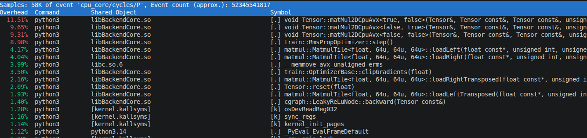
perf output after fix 7.
Opt. 8 - Fix memory leak on ABI level
{% include pytorch-opt-summary.html
before="3.41s" after="2.78s"
speedup="1.23x" branch="dev/cpu_optimization_fixed" commit="a9d6658b813a1f9a1b062df753d54483502b91bf" %}
Before we move on to the final fix we first have to fix a memory leak that started to appear in my unit tests now. We had several
memory leaks across the path already, and I fixed them silently (you can find them in the git history of course, but not in these blogposts).
However, this one I found particularly interesting, so I wanted to share it with you.
Importantly at first, the memory leak started to show its teeth on "larger" benchmarks. Even a simple MNIST example could burst my working
memory, and fill the GPU as well. However, running compute-sanitizer --leak-check full did not reveal anything. So the memory
leak is not visible once the program shuts down. So how do we go about it now? Sitting there with no clue as to what might be going on we
might want to try git bisect, checking which commit introduced the leak and then go about fixing it.
Luckily for us though we localized memory management, so we might as well start by taking a closer look at our memory pool. For reference,
here are its declaration and its instantiation again.
Three steps earlier we were already talking about static and dynamic linking, and how they differ in execution below. That priming will
come in handy now as we will see. So let us first think about my sloppy initialization of the memory pools. I used inline static without
giving it much thought, but that already reveals a problem, more concretely in the use of static.
The keyword static has a little more to it than meets the eye. At a class level we can make a static declared object a class object that
all instances share. Inside a function the drill is the same. But what about namespace scope, as we have it here? In that case the C++
standard gives it static storage duration and internal linkage. That firmly squares it as a translation unit local entity. That is, each translation unit gets its own copy.
A translation unit is one .cpp file after being fully expanded as a result of the preprocessor doing its thing. So now we can see why what I did
here is dangerous: Each .cpp including our memory pool has its own memory pool before the linker comes in, and the static keyword tells the
compiler that this is what we wanted. The learning here clearly is to be careful with the static keyword at namespace scope. Especially inside
headers!
Plainly removing static does not fix our problem yet though, so let's look deeper. We have the inline keyword left, which gives external
linkage, meaning the one-definition-rule (ODR) must be satisfied among translation units. When we compile the program, then at first we end
up with many translation units, each having their own local copy of the memory pool. But when we link them together then the linker picks up
on the inline keyword and merges them all into one canonical memory pool for the compiled output, satisfying the ODR for us. So far so good.
What breaks our code now is the one dimension that the linker itself cannot see at this point, namely the dynamic linking itself. In the previous
steps we have introduced a new compiler flag, forcing everything of our shared libBackendCore.so to be invisible to the binary we link it against,
except for the parts we want to expose. Obviously the memory pool is not part of that.
However, since we instantiate the memory pools in a header,
there ends up an instance of a memory pool in each of the libraries. The inline keyword is supposed to tell the linker that it should resolve all
those into one memory pool only, but our invisibility flag renders that attempt impossible. Additionally I did the following in the tensor class:
The DLLIB_API macro here hides the visibility=default attribute, enabling cross-library access through the PLT and the GOT for these
two classes. The error snuck in when I inlined the destructor of tensorValues_t though, leading to a local copy of the destructor in the
shared libraries as well. The following image shows how the includes can happen:
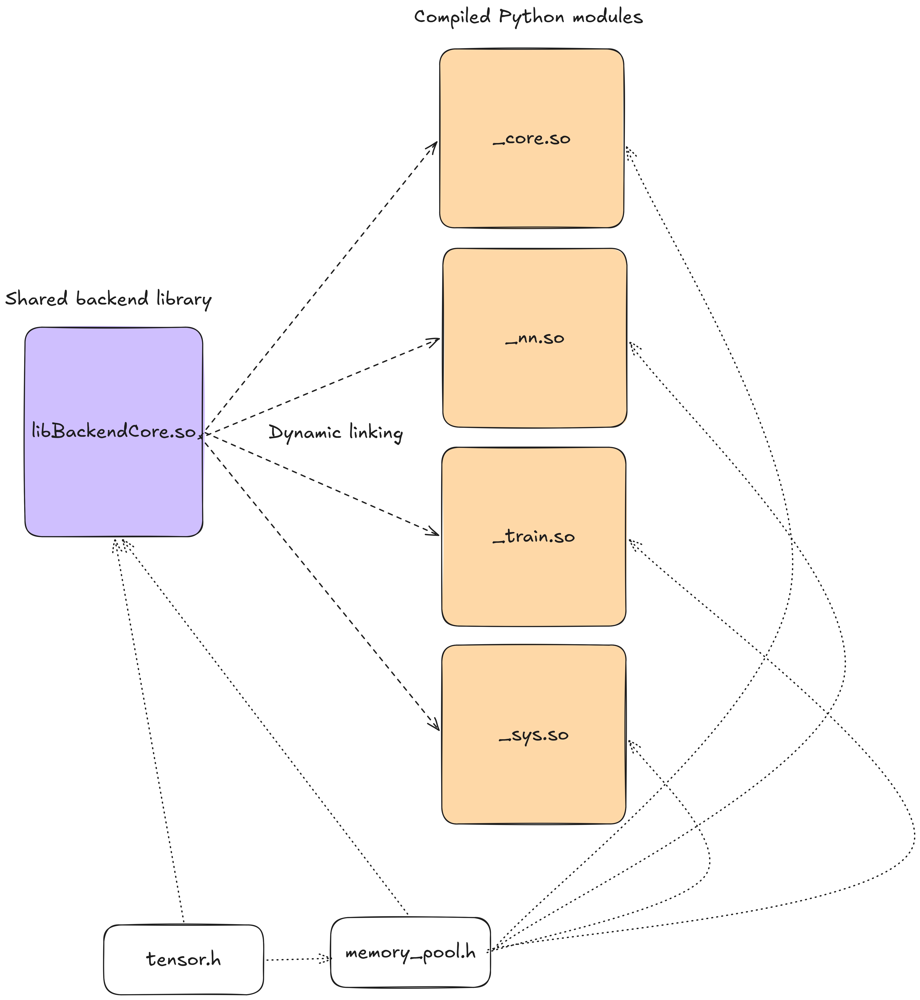
The schema of shared libraries, and how they include both the memory pool and the tensor.
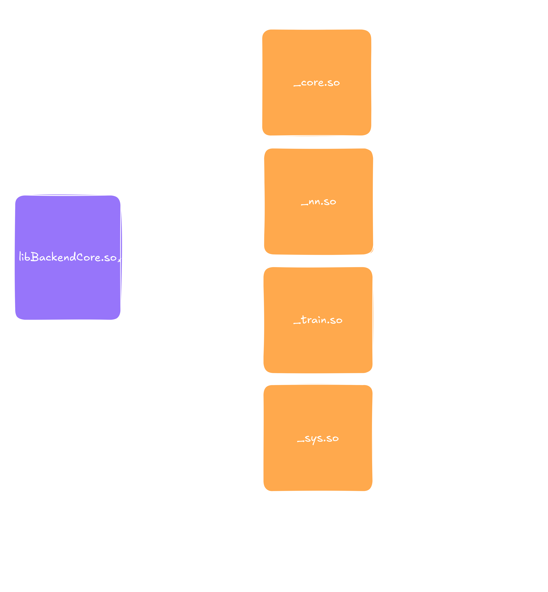
The schema of shared libraries, and how they include both the memory pool and the tensor.
On the left side of this image we see the libBackendCore.so. This is the fundamental backend library that all the Python modules use
and link against at run-time. It is a shared library to avoid duplicate code and make object management simpler. On the right side we
see the Python modules. These are the bindings wrapping around the backend library and exposing it to the Python frontend. Both the
tensor.h and the memory_pool.h get included in each of these, or at least theoretically can do so.
The libBackendCore.so has default visibility of objects set to hidden, while the right side has visibility set to visible on everything.
The problem that arises from that is depicted in this second image.
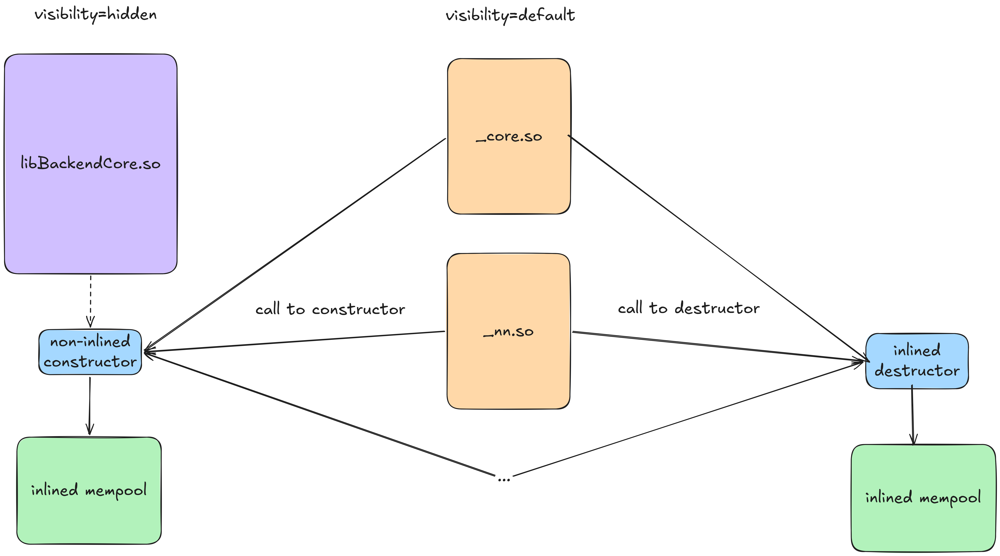
The two sides of the Python library (backend and frontend), and how they forward requests to the memory pools.
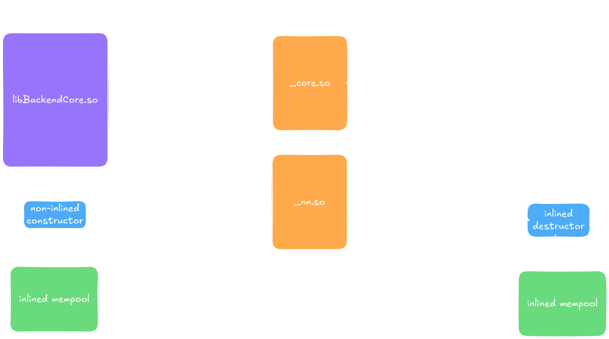
The two sides of the Python library (backend and frontend), and how they forward requests to the memory pools.
And here we finally go full circle. The hidden visibility creates two memory pools, one owned by libBackendCore.so, and
one shared among the Python frontends. Because the constructor (or more precisely the resize()-method of the tensorValues_t class)
is exposed through the dynamic library, requests to allocate memory go into the backend. Because methods accessing the values
walk through the backend as well, this usually works fine so far.
However, deallocation happens in the inlined destructor of tensorValues_t, and gets called directly in the Python frontend modules.
Because they do not see the libBackendCore's memory pool, but instead their own copy of it, they direct these requests to their own
memory pool. This results in a loop where the memory pool in libBackendCore keeps on allocating memory, but is never asked to free any
of that.
The fix to that now is straightforward. We can either non-inline the destructor, in which case a developer might be inclined to do so
again or something similar in the future. In other words, we would be setting up a booby-trap for ourselves and everyone else working on
the same project. Or alternatively we could open up the memory pools by making them visible in the backend as well, ensuring that all parties
see the same instances of memory pools. My measurements did not indicate a significant performance penalty in either direction, so I went
with the latter solution, ending up with:
{% include pytorch-opt-summary.html
before="2.78s" after="3.53s"
speedup="0.79x" branch="dev/cpu_optimization_fixed" commit="9d07371a5bead2c4e96c370a1b28df2e6b215bc0" %}
We want to do one last optimization step that is pretty obvious and a nice experiment as well. In the previous steps we found that
matmul became once again our bottleneck. To verify that this still holds we can run perf once more to see the obvious once more:
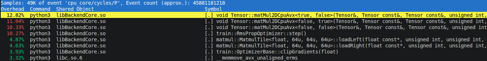
perf output before fix 9.
Our library now sings "Honey came in and she caught me red handed...", and we can safely proceed on optimizing the matmul, knowing
that our efforts mean something. There's not too much we can do in this current setting though, albeit I have some more ideas (see the summary),
but the most obvious one and perhaps the most interesting is a parallel computation. We already know from CUDA that we can assign one thread to
compute an entire tile of the result without any worries of thread coordination, so why not do that here as well?
Since we might be wanting to do that with other operations as well in the future I decided to go for a thread pool. Because the implementation of
that is probably not too interesting here, and there are great sources out there, I simply give you the class definition, and you can look up
the implementation in detail in the repository. The definition looks like this now:
// src/backend/shared/threadpool.h
namespace threadpool_impl {
class ThreadPool final {
private:
// ...
public:
ThreadPool() : stop{false}, activeTasks{0} {
constexpr unsigned int nthreads = 3; // we leave one P-core for the rest of the program
threads.reserve(nthreads);
for(unsigned int i = 0; i < nthreads; i++) {
threads.emplace_back(&ThreadPool::workerLoop, this);
}
};
~ThreadPool() noexcept;
// thread pool is singleton, hence suppress copies and moves
ThreadPool(const ThreadPool&) = delete;
ThreadPool& operator=(const ThreadPool&) = delete;
ThreadPool(ThreadPool&&) = delete;
ThreadPool& operator=(ThreadPool&&) = delete;
void enque(std::function<void()> f);
void waitAll();
};
}
I already took some time here to empirically find the optimal number of threads. A more canonical way would be to determine the number of
cores the computer has via std::thread::hardware_concurrency(), and then doing some empirics. In the case of my
Intel i5 210H, it supplies us with four performance cores and four efficiency cores. The performance cores return a value of two each,
so the function call returns a 12 for me. Obviously though the efficiency cores are slower than the performance cores, and giving the operation
more than four threads resulted in degraded results. The optimal number of threads seemed to be three, one for each performance core with one
performance core being free for other tasks.
Launching the threadpool onto our matmul looks like this now:
No surprises there. Lastly we also want to make sure that we avoid false sharing.
We can do this by making sure that the tilesize is a multiple of the size of a cache-line, e.g. through constexpr tensorSize_t TILESIZE =
(MemoryLayout::CACHE_LINE_BYTES / sizeof(ftype)) * 4;, and making sure that the tiles are cache-line aligned as well, by using
alignas(MemoryLayout::CPU_TENSOR_ALIGNMENT) std::array<T, TileM * TileK> left{};. Tensor-alignment is 64 in my case, once again the size
of a cache-line on my system.
Running the parallel matmul now gives us the following run-time: 4.11s. That's a fraction of 0.68, or in other words, the version we had
before was 1.48 times faster. On top of it this version is also much more volatile in its run-time, meaning the variance in between subsequent
batches also increased visibly. Running perf stat gives us the next figure.
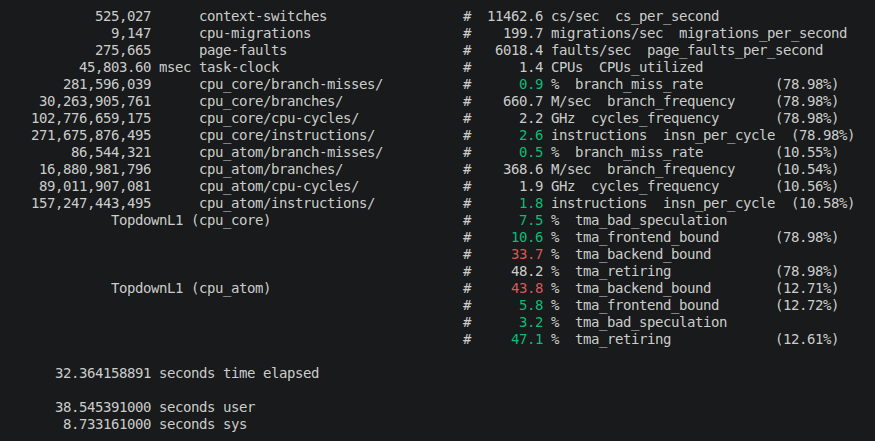
perf stat output for parallel matmul.
We want to compare this with the non-parallel matmul:
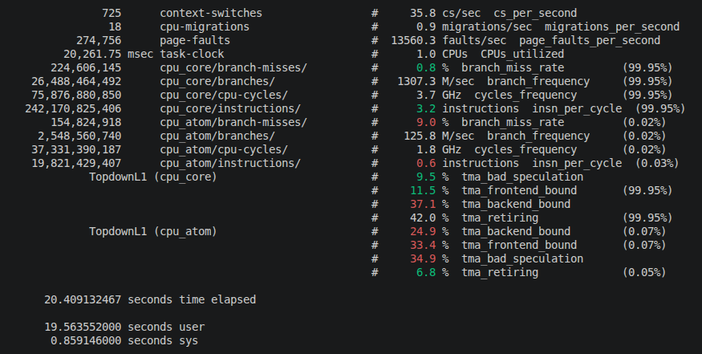
perf stat output for non-parallel matmul.
The two most striking things are something we have already seen. We find ourselves in a lot of context switches, and also still an
elevated number of efficiency core instructions. If the scheduler wills it, what say do we have? Ok well, we do actually have a say in
it, but just for reference we might try with more threads. I have 12 possible threads I can run, so let's try 10 threads for now. We get
a run-time of 5.10s (with a least stable variance again). I will spare you the perf stat output here, since it just captures the previous
trend.
So in summary, our enemy has become the scheduler, and our remedy against it is core pinning. We take the three threads we had earlier and assign them one of the performance cores. The threadpool's new
constructor now looks like this:
// src/backend/shared/threadpool.h
#define PIN_CORES
#ifdef PIN_CORES
#include <pthread.h>
#include <sched.h>
#endif
namespace threadpool_impl {
class ThreadPool final {
private:
// ...
public:
ThreadPool() : stop{false}, activeTasks{0} {
#ifdef PIN_CORES
constexpr unsigned int nthreads = 3; // we leave one P-core for the rest of the program
const std::vector<int> pCores = {0, 2, 4, 6};
#else
const unsigned int nthreads = 10; //std::max(static_cast<unsigned int>(1), std::thread::hardware_concurrency() / 2);
#endif
threads.reserve(nthreads);
for(unsigned int i = 0; i < nthreads; i++) {
threads.emplace_back(&ThreadPool::workerLoop, this);
#ifdef PIN_CORES
cpu_set_t cpuset;
CPU_ZERO(&cpuset);
CPU_SET(pCores[i], &cpuset);
pthread_setaffinity_np(threads.back().native_handle(),
sizeof(cpu_set_t), &cpuset);
#endif
}
};
// ...
};
}
The core numbers const std::vector<int> pCores = {0, 2, 4, 6}; are CPU specific and need to be queried using lscpu.
For example, lscpu --extended gives me
We can use the frequencies to identify P- and E-cores, and the core tells us which physical unit this is.
Giving now three threads, one per physical P-core and fixing it to that core, our benchmark time becomes
3.53s. Better than before, but still slower than the non-parallel 2.78s we get. Attempting to give each P-core
two threads increases the time back to 4.22s. Running perf stat again on the three-threaded application parrots
back at us the following:
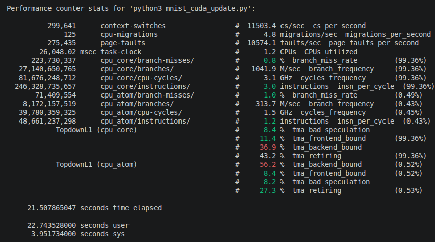
perf stat output after core pinning.
Interestingly the program was way faster than it had been previously, with a benchmark time down to 2.68s. Running it a minute
later with perf stat shows that this seemed to be a fluke. I cannot find yet what it was, perhaps a temperature change in the room
or just a lucky scheduling? Hard to say, but anyway, we do see our context switches having gone down by half, but they're still
above what we were used to in the single threaded application.
The solution to the puzzle comes from running the benchmarks that are in {project root}/benchmarking. Here is a benchmark file
using Google benchmark, where multiple sizes of inputs are run. The following image shows those benchmarking results for the single
threaded matmul operation on different input sizes, along with total time and CPU time.
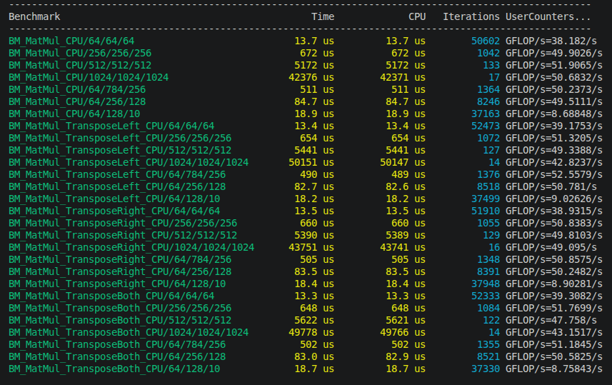
Google benchmark output on single-threaded matmul.
To get the full picture of course we do need to compare with the multithreaded version, which looks like this:
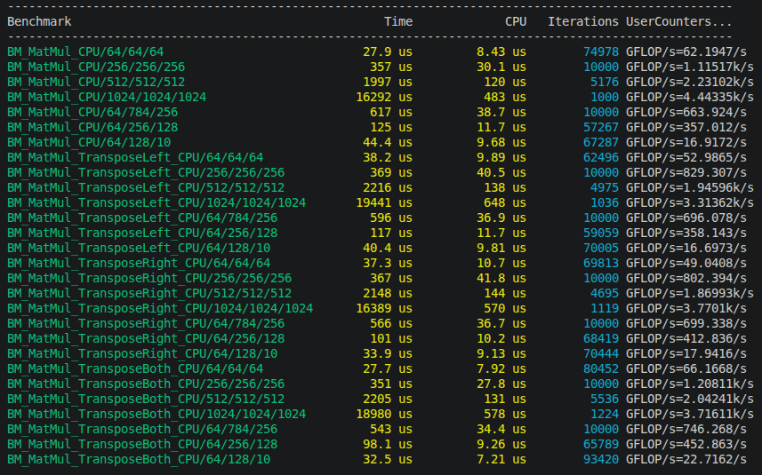
Google benchmark output on multi-threaded matmul.
And here we can finally see what was going on. In general the parallel version whups the single threaded version on CPU
time every time. Looking at the overall time we do see that the single threaded version wins on smaller samples, while the multi-threaded
version does so on larger ones. The threshold in the examples is somewhere between the sizes of 64/64/64/ and 256/256/256.
On the MNIST benchmark the system seems to be losing so much time just managing all of our threads, that the gains it wins on the parallel
matmul get lost in kernel space itself. That is not a bad result for us though, as on smaller inputs, at least for our small networks
we've been playing with so far, the single-threaded matmul is sufficient. If we want to keep the multithreaded matmul, then the way forward
is to run further benchmarks and decide a sensible threshold on the input dimensions, adjusted by the system one is running on.
That's of course quite some work to do there, should we want to generalize the parallel matmul. And I do not even have the systems to test
all of that on. For now I decided to keep the parallel matmul and hide its compilation behind an optional CMake flag, which is turned
off by default. The core pinning hides behind a flag inside the code itself and next to the threadpool. If you feel like experimenting with
those settings I won't stop you and would appreciate if you could let me know what you found. As for this article though it's probably a good
time to call it a day.
Summary
This concludes the last part of this four part series on PyTorch demystified. In this part we looked at the CPU of the program and used
perf for profiler driven optimizations, and we reduced the overall time from 41.45s down to 2.78s. That is a nearly 15-fold improvement in
run-time performance, and we started out with a program that wasn't written all too shabby to begin with.
Our optimizations led us over compiler optimizations to better cache behavior in the matmul operations, as well as AVX instructions and a
threadpool, but also led us across to other interesting parts of the program where we optimized, most notably the interface in between
shared libraries.
We could add further optimizations both for CUDA and for the CPU backend. For instance, we could implement mixed precision floating point
arithmetic, modern datatypes such as the brainfloat data type, more constexpr-functions for lookups, such as in the sigmoid function, among
others. But for now it's a good choice to rest and enjoy our well earned evening walk or whatever you are into. As always I'd be happy to hear
feedback, so feel free to reach out. Cheers.